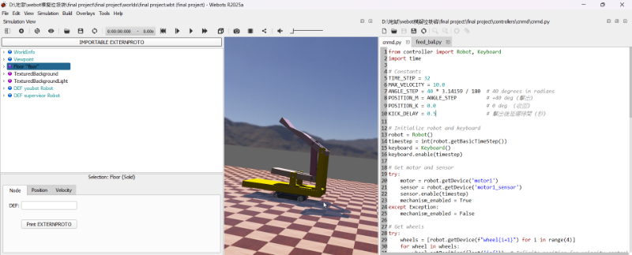

Exam3 <<
Previous Next >> Brython
Final
期末協同專案執行過程影片、簡報與 PDf 報告檔案 (六人一組) (30%)
題目: Webots 動態投籃模擬系統的協同設計
說明:
籃框架被配置在一定範圍內, 可隨機慢速前進、後退及左右擺動, 投籃機構系統帶有一定數量的籃球, 被配置在可自由移動的輪車上.
操作者可利用鍵盤特定按鍵控制投籃輪車的移動並發射投籃, 每投出一球後系統透過記分板進行計分, 並由送球機構進行補球或移動輪車取球, 遊戲可進行至全部數量籃球投完為止.
請將期末協同專案執行過程、內容與心得, 製作成影片，配合字幕上傳至 Youtube 後嵌入各階段的期末報告頁面中.
影片標題: 國立虎尾科技大學 - 機械設計工程系 - cd2025 期末報告 - 學員學號 - 各階段影片主題
/downloads/final project.7z 檔案位置
https://youtu.be/5besxJuk2bs 模擬影片-1 把shooter和車子黏起來 利用bounding object group來實現
以下是控制車子和投射器的程式檔案
from controller import Robot, Keyboard
import time
# Constants
TIME_STEP = 32
MAX_VELOCITY = 10.0
ANGLE_STEP = 40 * 3.14159 / 180 # 40 degrees in radians
POSITION_M = ANGLE_STEP # +40 deg (擊出)
POSITION_K = 0.0 # 0 deg (收回)
KICK_DELAY = 0.5 # 擊出後延遲時間 (秒)
# Initialize robot and keyboard
robot = Robot()
timestep = int(robot.getBasicTimeStep())
keyboard = Keyboard()
keyboard.enable(timestep)
# Get motor and sensor
try:
motor = robot.getDevice('motor1')
sensor = robot.getDevice('motor1_sensor')
sensor.enable(timestep)
mechanism_enabled = True
except Exception:
mechanism_enabled = False
# Get wheels
try:
wheels = [robot.getDevice(f"wheel{i+1}") for i in range(4)]
for wheel in wheels:
wheel.setPosition(float('inf')) # Infinite position for velocity control
wheel.setVelocity(0)
platform_enabled = True
except Exception:
platform_enabled = False
# Debounce key
key_pressed = {
'k': False
}
while robot.step(timestep) != -1:
key = keyboard.getKey()
# Platform control
if platform_enabled:
if key == Keyboard.UP:
for wheel in wheels:
wheel.setVelocity(MAX_VELOCITY)
elif key == Keyboard.DOWN:
for wheel in wheels:
wheel.setVelocity(-MAX_VELOCITY)
elif key == Keyboard.LEFT:
wheels[0].setVelocity(MAX_VELOCITY)
wheels[1].setVelocity(-MAX_VELOCITY)
wheels[2].setVelocity(MAX_VELOCITY)
wheels[3].setVelocity(-MAX_VELOCITY)
elif key == Keyboard.RIGHT:
wheels[0].setVelocity(-MAX_VELOCITY)
wheels[1].setVelocity(MAX_VELOCITY)
wheels[2].setVelocity(-MAX_VELOCITY)
wheels[3].setVelocity(MAX_VELOCITY)
elif key == ord('Q') or key == ord('q'):
print("Exiting...")
break
else:
for wheel in wheels:
wheel.setVelocity(0)
# Kick mechanism control
if mechanism_enabled:
if key == ord('M') or key == ord('k'):
if not key_pressed['M']:
print("[KICK] 出擊 → 收回")
motor.setPosition(POSITION_M)
# 延遲（非阻塞式等待）
start_time = robot.getTime()
while robot.step(timestep) != -1:
if robot.getTime() - start_time >= KICK_DELAY:
break
motor.setPosition(POSITION_K)
key_pressed['M'] = True
else:
key_pressed['M'] = False
/downloads/final project (2).7z 這是加上補球的檔案
https://youtu.be/GoxnCxqUoD8 這是製作過程
https://youtu.be/A2Gu5H4j0zk 這是展示影片

製作具體流程 先創立一個新的robot 把supervisor改成true 令我們可以用程式創建球體
之後匯入.py檔案 就可以開始了
以下是控制發球機構的程式
from controller import Supervisor, Keyboard
import time
import random
import numpy as np
import re
# ----------------- 參數區 -----------------
HOOP_CENTER = [0.622, -0.103, 0.742838]
BALL_DEF_PATTERN = re.compile(r"Sphere_\d+")
supervisor = Supervisor()
timestep = int(supervisor.getBasicTimeStep())
keyboard = Keyboard()
keyboard.enable(timestep)
sphere_radius = 0.1
TRAJECTORY_POINT_RADIUS = 0.03 # 軌跡小球半徑
TRAJECTORY_POINT_STEP = 0.12 # 軌跡點間最小距離
TRAJECTORY_MAX_POINTS = 5 # 只保留5個軌跡點
waiting_ball_def = None
waiting_ball_info = None
last_key_time = 0
debounce_time = 0.5
default_feed_pos = (0.029277, 0.020116, 1.37973)
PRINT_INTERVAL = 0.2
current_tracked_def = None
last_print_time = time.time()
# 軌跡資料
trajectory_points = [] # [(pos, def_name)] 最多五個
def axis_angle_to_rotation_matrix(axis, angle):
x, y, z = axis
c = np.cos(angle)
s = np.sin(angle)
C = 1 - c
return np.array([
[x*x*C + c, x*y*C - z*s, x*z*C + y*s],
[y*x*C + z*s, y*y*C + c, y*z*C - x*s],
[z*x*C - y*s, z*y*C + x*s, z*z*C + c]
])
def generate_valid_def_name(base_name="Sphere"):
timestamp = int(supervisor.getTime() * 1000)
return f"{base_name}_{timestamp}_{random.randint(0, 10000)}"
def generate_random_color():
return random.random(), random.random(), random.random()
def youbot_local_to_world(local_pos):
youbot_node = supervisor.getFromDef('youbot')
if youbot_node is None:
raise RuntimeError("找不到 DEF 為 youbot 的 Robot 物件")
youbot_translation = np.array(youbot_node.getField('translation').getSFVec3f())
youbot_rotation = youbot_node.getField('rotation').getSFRotation()
youbot_axis = youbot_rotation[:3]
youbot_angle = youbot_rotation[3]
youbot_rot_mat = axis_angle_to_rotation_matrix(youbot_axis, youbot_angle)
rotated = youbot_rot_mat @ np.array(local_pos)
world_pos = youbot_translation + rotated
return tuple(world_pos)
def create_static_ball(def_name, world_pos, r, g, b):
sphere_string = f"""
DEF {def_name} Solid {{
translation {world_pos[0]} {world_pos[1]} {world_pos[2]}
contactMaterial "ball"
children [
Shape {{
geometry Sphere {{
radius {sphere_radius}
}}
appearance Appearance {{
material Material {{
diffuseColor {r} {g} {b}
}}
}}
}}
]
boundingObject Sphere {{
radius {sphere_radius}
}}
}}
"""
root = supervisor.getRoot()
children_field = root.getField("children")
children_field.importMFNodeFromString(-1, sphere_string)
def create_dynamic_ball(def_name, world_pos, r, g, b):
sphere_string = f"""
DEF {def_name} Solid {{
translation {world_pos[0]} {world_pos[1]} {world_pos[2]}
contactMaterial "ball"
children [
Shape {{
geometry Sphere {{
radius {sphere_radius}
}}
appearance Appearance {{
material Material {{
diffuseColor {r} {g} {b}
}}
}}
}}
]
boundingObject Sphere {{
radius {sphere_radius}
}}
physics Physics {{
mass 0.01
density -1
}}
}}
"""
root = supervisor.getRoot()
children_field = root.getField("children")
children_field.importMFNodeFromString(-1, sphere_string)
def create_trajectory_point(pos):
"""
在pos位置新增一個小球作為拋物線軌跡點，回傳DEF名稱。
用Transform持有Shape，僅作視覺標記，不影響物理。
"""
def_name = generate_valid_def_name("TrajectoryPt")
sphere_string = f"""
DEF {def_name} Transform {{
translation {pos[0]} {pos[1]} {pos[2]}
children [
Shape {{
geometry Sphere {{
radius {TRAJECTORY_POINT_RADIUS}
}}
appearance Appearance {{
material Material {{
diffuseColor 1 0.7 0
transparency 0.3
}}
}}
}}
]
}}
"""
root = supervisor.getRoot()
children_field = root.getField("children")
children_field.importMFNodeFromString(-1, sphere_string)
return def_name
def delete_trajectory_points():
"""刪除所有軌跡點"""
global trajectory_points
for _, def_name in trajectory_points:
node = supervisor.getFromDef(def_name)
if node:
node.remove()
trajectory_points.clear()
def create_static_sphere(supervisor, x, y, z):
global waiting_ball_def, waiting_ball_info
def_name = generate_valid_def_name()
waiting_ball_def = def_name
r, g, b = generate_random_color()
world_pos = youbot_local_to_world((x, y, z))
waiting_ball_info = (world_pos, r, g, b)
create_static_ball(def_name, world_pos, r, g, b)
def activate_dynamic_ball():
global waiting_ball_def, waiting_ball_info
if waiting_ball_def is None or waiting_ball_info is None:
return
ball_node = supervisor.getFromDef(waiting_ball_def)
if ball_node is not None:
ball_node.remove()
supervisor.step(int(supervisor.getBasicTimeStep()))
world_pos, r, g, b = waiting_ball_info
create_dynamic_ball(waiting_ball_def, world_pos, r, g, b)
waiting_ball_def = None
waiting_ball_info = None
def is_ball_landed(pos, threshold_z=0.13):
"""當球z接近地面時視為落地"""
return pos[2] < threshold_z
print("按 A 產生一顆靜止球，按 M 讓球變 dynamic 可擊出（最多只有5個軌跡點跟著球跑，球落地後軌跡自動消失）")
while supervisor.step(timestep) != -1:
key = keyboard.getKey()
current_time = time.time()
# 產生球
if key == ord('A') and (current_time - last_key_time >= debounce_time):
if waiting_ball_def is None:
create_static_sphere(supervisor, *default_feed_pos)
current_tracked_def = waiting_ball_def
delete_trajectory_points() # 新球產生時清除舊軌跡
else:
print("還有一顆球等待擊出，請先擊出再產生新球。")
last_key_time = current_time
# 讓球變動態
if key == ord('M') and (current_time - last_key_time >= debounce_time):
activate_dynamic_ball()
last_key_time = current_time
# 拋物線軌跡追蹤
if current_tracked_def is not None:
ball_node = supervisor.getFromDef(current_tracked_def)
if ball_node is not None:
pos = ball_node.getPosition()
# 每 PRINT_INTERVAL 印座標
if current_time - last_print_time >= PRINT_INTERVAL:
#print(f"球 {current_tracked_def} 絕對座標: [{pos[0]:.4f}, {pos[1]:.4f}, {pos[2]:.4f}]")
last_print_time = current_time
# 軌跡點：每隔一段距離才加一個，僅保留5個點
if (not trajectory_points) or np.linalg.norm(np.array(pos) - np.array(trajectory_points[-1][0])) > TRAJECTORY_POINT_STEP:
def_name = create_trajectory_point(pos)
trajectory_points.append((pos, def_name))
if len(trajectory_points) > TRAJECTORY_MAX_POINTS:
# 移除最舊的點
_, old_def = trajectory_points.pop(0)
node = supervisor.getFromDef(old_def)
if node:
node.remove()
# 若球落地，自動清除軌跡
if is_ball_landed(pos):
delete_trajectory_points()
else:
# 球消失，停止追蹤並清除軌跡
delete_trajectory_points()
current_tracked_def = None
# Enter here exit cleanup code.
Exam3 <<
Previous Next >> Brython